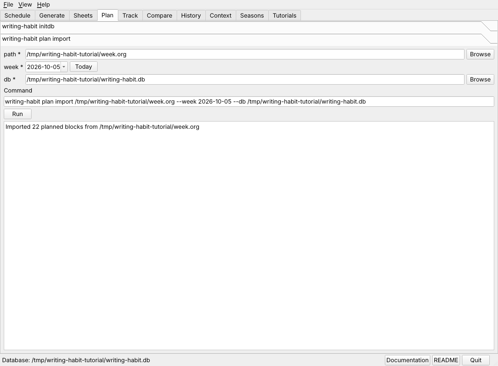

Import the plan
Plan import copies every block of the weekly table into the database, with
its day, its time, its project, and its activity. It also records which table
planned the week, which is how the sync later finds that week's legend.

The Plan tab after importing the practice week. Twenty-two blocks were loaded.
In the window
- Open the Plan tab and choose plan import.
- The path field already names the table open in the Schedule tab. Check that it is the right week.
- Set week to any date in that week. The week snaps back to its Monday.
- Press Run. The output names the number of blocks imported.
At the command line
writing-habit plan import ~/org/writing-schedule/tables/Oct5.org \
--week 2026-10-05 --db ~/org/writing-habit.db
Things to know
- Importing the same week again is safe. A block already in the database is not added twice.
- If you add blocks to the table during the week, import it again to add them. A block you delete from the table stays in the database. The Troubleshooting page shows how to clear a week's plan and import it again.
- Import the plan before the sync, so the sync reads this week's legend.
Next, import your writing effort.